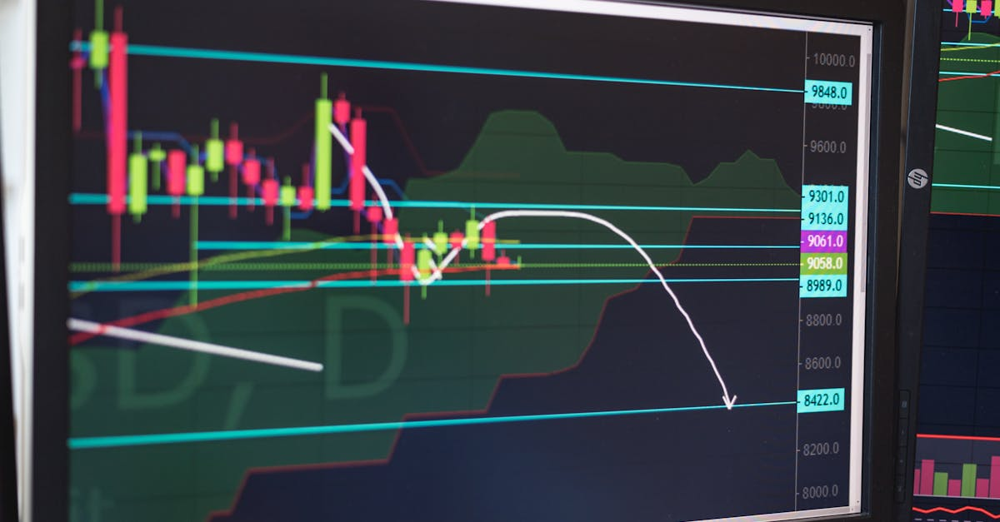

Un Accrochage Géopolitique aux Répercussions Financières
Dans un jeu diplomatique où les enjeux dépassent largement les frontières, l'annonce de Donald Trump concernant l'extension indéfinie de la trêve avec l'Iran, juste avant son expiration prévue, a suscité une onde de choc sur les marchés financiers mondiaux. Cette décision, intervenue alors que de nouvelles négociations semblaient s'enliser, témoigne de la complexité des relations internationales et de leur impact direct sur les flux de capitaux. La stratégie de l'administration américaine, oscillant entre pressions et ouvertures, crée une volatilité intrinsèque que les acteurs financiers doivent impérativement anticiper. L'annonce, relayée via la plateforme Truth Social, a rappelé la communication directe et parfois abrupte de l'ancien président, une méthode qui, bien que non conventionnelle, a souvent eu le don de capter l'attention des marchés et d'influencer, parfois de manière significative, les décisions d'investissement. La mention d'un maintien du blocus maritime dans le détroit d'Ormuz, une artère vitale pour le commerce mondial, ajoute une couche de tension supplémentaire, soulignant la persistance des désaccords malgré la prolongation de la trêve. Il ne s'agit pas seulement d'une question de diplomatie ; c'est une équation complexe où chaque variable, chaque communiqué, peut déclencher des réactions en chaîne sur les devises, les matières premières et les indices boursiers. Les marchés du Forex, par leur nature intrinsèquement sensible aux événements mondiaux, sont particulièrement exposés à ces fluctuations. La capacité à décrypter ces signaux et à réagir promptement devient alors un avantage compétitif majeur.
👉 À lire : Guerre en Ukraine: Impacts sur le Forex et l'Energie

Le Rôle Clé du Pakistan et la Dynamique des Négociations
Le rôle du Pakistan en tant que médiateur dans ce dossier sensible ne peut être sous-estimé. En sollicitant l'administration américaine pour suspendre de nouvelles frappes et accorder un répit à l'Iran, Islamabad a démontré sa volonté de désamorcer les tensions régionales. Cette démarche souligne l'importance des acteurs régionaux dans la gestion des crises internationales. Cependant, l'échec des plans pour une nouvelle série de pourparlers met en lumière les difficultés inhérentes à la diplomatie entre des parties aux intérêts divergents. Les conditions posées par l'Iran pour une reprise des discussions, notamment la nécessité de présenter une nouvelle proposition 'pro-iranienne', révèlent la posture de Téhéran, cherchant à obtenir des concessions significatives. Cette impasse dans les négociations a des implications directes sur la perception du risque par les investisseurs. L'incertitude quant à l'avenir des relations irano-américaines alimente la volatilité sur les marchés. Les analystes financiers scrutent la moindre déclaration, le moindre mouvement, cherchant à anticiper les prochaines étapes. Dans ce contexte, les plateformes de trading automatisé, capables d'analyser en temps réel une multitude de données géopolitiques et économiques, prennent tout leur sens. Elles peuvent identifier les opportunités naissantes ou les risques imminents, bien avant qu'ils ne se matérialisent pleinement pour l'investisseur humain. La capacité de ces systèmes à traiter l'information de manière objective, sans l'émotionnel qui peut parfois altérer le jugement, est un atout indéniable dans un environnement aussi fluctuant.
👉 À lire : Hormuz: L'Iran ferme le détroit, le Forex sous tension?
Le Détroit d'Ormuz : Un Point d'Ancrage Stratégique et Économique
Le maintien du blocus dans le détroit d'Ormuz, bien que présenté comme une mesure de pression, est un élément crucial qui influence directement les marchés énergétiques et, par extension, le marché des changes. Ce détroit, par lequel transite une part significative du pétrole mondial, est un point névralgique de l'économie globale. Toute perturbation, ou même la simple menace de perturbation, dans cette zone a des conséquences immédiates sur le prix du baril de pétrole. Or, les prix du pétrole sont intrinsèquement liés aux performances de nombreuses devises, notamment celles des pays exportateurs. L'euro, le dollar, le yen, et même des devises émergentes, peuvent voir leur valeur fluctuer en fonction de l'évolution des cours du brut. L'annonce de Trump, en maintenant cette pression sur le détroit, crée une prime de risque qui peut se refléter sur les paires de devises majeures. Les traders attentifs à ces dynamiques géopolitiques cherchent à exploiter ces variations. Les systèmes de trading basés sur l'intelligence artificielle sont particulièrement performants dans ce domaine. Ils sont capables de corréler en temps réel les annonces géopolitiques, les fluctuations des prix du pétrole, et les mouvements des paires de devises, afin d'exécuter des transactions optimisées. L'analyse prédictive offerte par ces technologies permet de mieux appréhender l'impact potentiel de telles décisions sur le marché du Forex, transformant une situation de tension géopolitique en opportunité de trading.
L'Impact sur le Marché du Forex : Volatilité et Opportunités
La décision de prolonger la trêve tout en maintenant une pression sur le détroit d'Ormuz crée un environnement de marché complexe pour le Forex. D'une part, l'absence de nouvelles escalades militaires directes peut être perçue comme un facteur d'apaisement relatif, susceptible de réduire la demande pour les devises refuges comme le franc suisse ou le yen. D'autre part, la persistance des tensions géopolitiques et l'incertitude quant à l'issue des négociations continuent d'alimenter une volatilité sous-jacente. Les paires de devises impliquant le dollar américain peuvent réagir aux déclarations de l'administration, tandis que les devises des pays du Moyen-Orient ou ceux fortement dépendants des flux énergétiques sont particulièrement exposées. C'est dans ce contexte que l'intervention d'un agent IA spécialisé dans le trading de devises prend tout son sens. Ces systèmes sont conçus pour analyser en permanence un volume massif de données, incluant les nouvelles géopolitiques, les indicateurs économiques, et les mouvements de prix sur les marchés. Ils peuvent identifier des schémas et des corrélations que l'œil humain pourrait manquer, permettant d'anticiper les mouvements du marché avec une précision accrue. L'IA ne se contente pas de réagir ; elle peut prédire les réactions probables du marché face à des événements tels que l'extension de cette trêve, offrant ainsi un avantage stratégique aux investisseurs qui l'utilisent.
L'Intelligence Artificielle comme Outil d'Analyse Prédictive
Face à la complexité croissante des marchés financiers et à l'influence prépondérante des facteurs géopolitiques, l'intelligence artificielle s'impose comme un outil indispensable pour les investisseurs modernes. Dans le cas de la situation Iran-USA, un agent IA peut traiter simultanément plusieurs flux d'informations : les communiqués officiels, les analyses des médias internationaux, les données sur le prix du pétrole, les mouvements sur les marchés des changes, et même le sentiment général du marché exprimé sur les réseaux sociaux. En analysant ces données avec des algorithmes avancés, l'IA peut identifier des corrélations subtiles et anticiper les réactions probables du marché. Par exemple, elle pourrait évaluer l'impact de l'extension de la trêve sur le dollar américain par rapport à l'euro, ou sur le yen japonais face à une potentielle aversion au risque. Les systèmes d'IA comme ceux développés par ForexBot AI ne se contentent pas de suivre des règles prédéfinies ; ils apprennent et s'adaptent en permanence. Ils peuvent ajuster leurs stratégies de trading en fonction de l'évolution du contexte, optimisant ainsi les chances de succès. C'est la promesse d'un trading plus informé, plus réactif, et potentiellement plus profitable, même dans des conditions de marché incertaines et volatiles.

Trading Automatisé 24h/24 : La Réponse à la Volatilité Géopolitique
La nature même du marché du Forex, ouvert 24 heures sur 24, cinq jours par semaine, rend l'analyse humaine continue quasi impossible. Les événements géopolitiques, comme la décision concernant l'Iran, peuvent survenir à tout moment, y compris pendant les heures de sommeil des traders. C'est là qu'intervient la force du trading automatisé par IA. Un agent IA, tel que proposé par ForexBot AI, ne connaît ni la fatigue ni les contraintes de temps. Il opère en continu, surveillant les marchés, analysant les données et exécutant des transactions selon des stratégies pré-définies et optimisées par l'apprentissage machine. Dans le contexte de la trêve Iran-USA, l'IA peut réagir instantanément aux nouvelles, saisir les opportunités de trading qui se présentent lors des fluctuations provoquées par ces annonces, et gérer les risques de manière proactive. Elle peut identifier, par exemple, une opportunité d'achat sur une paire de devises suite à un signal d'apaisement, ou une vente en cas de résurgence des tensions. Cette capacité d'opération non-stop garantit que l'investisseur ne manque aucune opportunité, quelle que soit l'heure ou le jour, et maintient une gestion constante de son portefeuille, un atout majeur lorsque la géopolitique dicte le rythme des marchés.
Décryptage des Signaux : L'IA Face à la Complexité des Annonces
Les annonces de Donald Trump sont souvent caractérisées par leur caractère succinct et leur diffusion via des plateformes non traditionnelles. Pour un trader, interpréter la portée réelle de telles déclarations peut être un défi. L'extension de la trêve est-elle un signe de détente sincère ou une manœuvre tactique ? Le maintien du blocus est-il une menace sérieuse ou une posture diplomatique ? L'intelligence artificielle excelle dans le décryptage de ces signaux ambigus. En analysant le langage utilisé, le contexte de l'annonce, et les réactions immédiates des marchés financiers, l'IA peut évaluer la probabilité de différents scénarios. Elle peut distinguer un tweet purement rhétorique d'une décision politique lourde de conséquences. Par exemple, si une annonce de Trump entraîne une baisse immédiate du prix du pétrole et une appréciation du dollar, l'IA interprétera cela comme un signal baissier potentiel pour les devises liées aux matières premières et haussier pour le dollar. Elle peut ensuite ajuster les paramètres de trading en conséquence, cherchant à capitaliser sur ces mouvements anticipés. Cette capacité à traiter et à interpréter l'information de manière nuancée est ce qui distingue les systèmes d'IA avancés des approches de trading plus conventionnelles, offrant une vision plus claire dans un paysage informationnel souvent brouillé.
Anticiper les Répercussions sur les Marchés Émergents et les Matières Premières
L'extension de la trêve Iran-USA et le maintien du blocus dans le détroit d'Ormuz ne se limitent pas aux grandes économies. Leurs répercussions peuvent être particulièrement sensibles sur les marchés émergents et les marchés des matières premières. Les pays dont l'économie dépend fortement de l'exportation de pétrole, comme certains membres de l'OPEP ou des nations africaines, verront leurs devises potentiellement affectées par les fluctuations du prix du brut. Une hausse des prix, due aux tensions persistantes, pourrait soutenir leurs monnaies, tandis qu'une détente trop rapide pourrait avoir l'effet inverse. De même, les marchés émergents qui dépendent des importations d'énergie verront leur balance commerciale impactée. Pour un agent IA, cette analyse intermarchés est fondamentale. Il ne se contente pas d'étudier la paire EUR/USD isolément. Il prend en compte l'ensemble de l'écosystème financier : l'or, le pétrole, les indices boursiers mondiaux, et les devises des pays émergents. L'IA peut identifier comment une décision diplomatique affectant le Moyen-Orient se propage à travers ces différents marchés, permettant de construire des stratégies de trading plus robustes et diversifiées. L'objectif est de capter les opportunités créées par ces interconnexions complexes, transformant une actualité géopolitique en potentiel de gain.
Conclusion : Naviguer l'Incertitude avec l'Aide de l'IA
La décision de Donald Trump de prolonger la trêve avec l'Iran, tout en maintenant la pression sur le détroit d'Ormuz, illustre parfaitement la manière dont la géopolitique continue de façonner les marchés financiers mondiaux. Dans cet environnement d'incertitude croissante, où les annonces soudaines et les négociations complexes peuvent provoquer des turbulences, les investisseurs cherchent des outils fiables pour naviguer ces eaux troubles. L'intelligence artificielle, et plus particulièrement les agents IA spécialisés dans le trading de Forex comme ceux proposés par ForexBot AI, offre une réponse concrète. En opérant 24h/24, en analysant une quantité massive de données en temps réel, et en décryptant les signaux, même les plus ambigus, l'IA permet de transformer le risque lié à la volatilité géopolitique en opportunités de trading. Elle offre la capacité d'anticiper les mouvements du marché, de gérer les risques de manière proactive, et d'optimiser les stratégies d'investissement. Alors que les relations internationales continuent d'évoluer, s'équiper d'une technologie de trading automatisé par IA n'est plus un luxe, mais une nécessité pour quiconque souhaite protéger et faire fructifier son capital sur le marché dynamique du Forex.